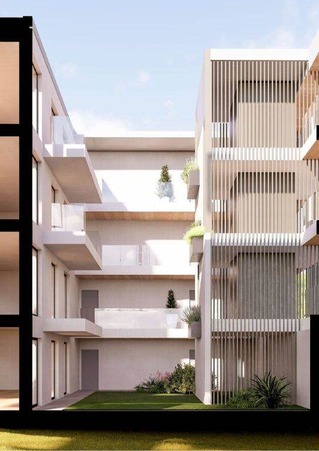
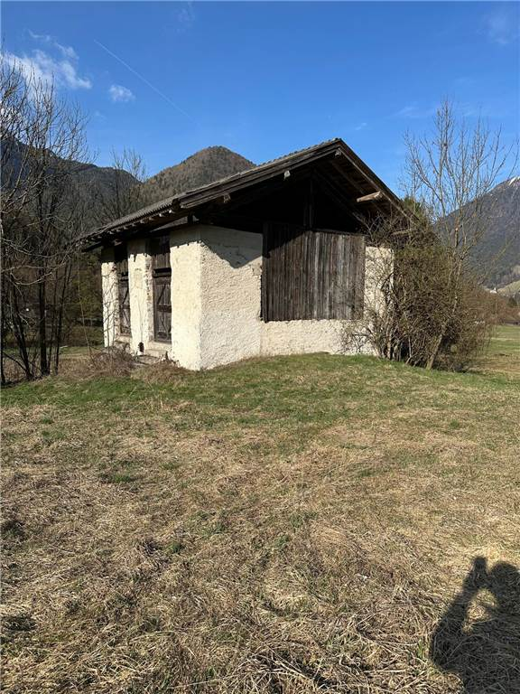

2430 V
2430 VIl piacere del centro, lo spazio di una casa da vivere.
Riva del Garda, via Prati, in centro
Ultimo piano circondato da terrazzi: tre camere, due bagni, sala, cucina abitabile e cantina.
- Superficie
- 156 mq
- Locali
- 6
- Prezzo
- 636.000 €
Toccate «In affitto» e il cartello si gira.
12 immobili
2430 VRiva del Garda, via Prati, in centro
Ultimo piano circondato da terrazzi: tre camere, due bagni, sala, cucina abitabile e cantina.
 2428 V
2428 VRiva del Garda, via Vicenza, zona lago
Vista aperta, tre camere e due bagni, garage e posto auto. Per sentirsi un po' in vacanza anche a casa.
 2426 V
2426 VArco, vicino a tutti i servizi
Ultimo piano con ascensore in una costruzione recente: due camere, garage e posto auto condominiale.

V 2420Riva del Garda, Varone, località Pasina
Bilocali, trilocali e quadrilocali in classe A+, con giardini privati, garage e cantina. Trattative solo in ufficio.
 2516 V
2516 VRiva del Garda, viale dei Tigli
Attico con soppalco, esposto a sud-est-ovest: due sale, tre camere, tre bagni, tre garage chiusi e due posti auto.

V 2424Val di Ledro, Bezzecca
Il fienile è già consolidato e il tetto sistemato: è pronto per essere ristrutturato e diventare una casa.
Riva del Garda, piazza Garibaldi
La piazza, il verde del parco del Brolio, la Rocca di Riva. Primo piano, tre camere e due bagni.
Riva del Garda, centro storico
Ultimo piano con ascensore in un edificio d'epoca, tre camere, vista sui tetti e scorci del lago.
Canale di Tenno, nel borgo medievale
Accanto alla Casa degli Artisti: muri in pietra, legno pregiato, giardino privato di circa 250 mq e garage interrato.
Val di Ledro, Tiarno di Sotto
1.557 mq in una zona tranquilla, con la possibilità di comprare altri 895 mq vicini.
Val di Ledro, Pieve
736 mq con piano di lottizzazione approvato: si possono costruire fino a 320 mq su due livelli.
Bussolengo (Verona)
Edificio con il terreno attorno.
Riva del Garda
Tre locali con pareti attrezzate, grandi vetrate, riscaldamento e climatizzazione.
Gli annunci sono quelli pubblicati adesso sul sito di Garda Domus. Per le foto che mancano e per le visite, chiedete in ufficio.
Telefono 0464 557444
Fax 0464 520904
info@gardadomus.com